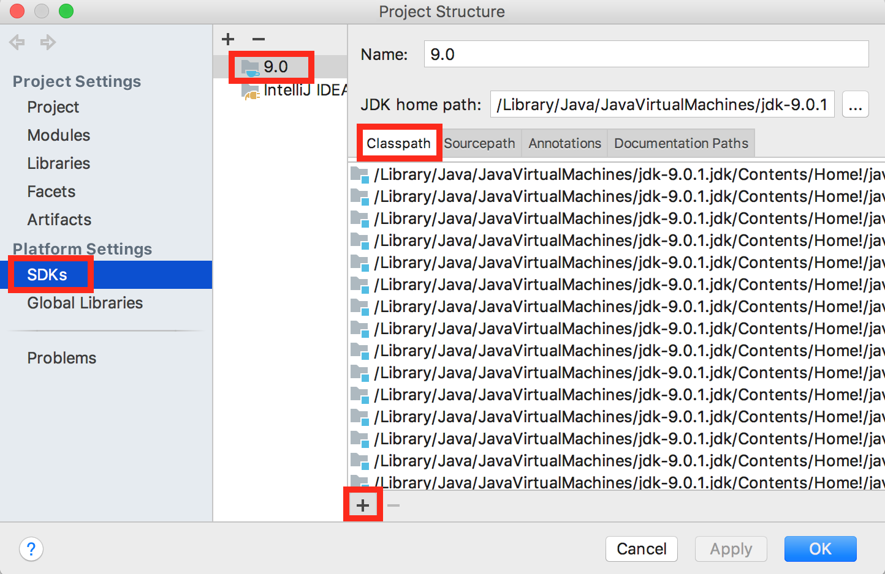

Introduction
In this lab, you will compare your solution to project 1A with 1 or 2 other students in your lab. On-time attendance is required this week. If you cannot attend your regular lab, you may attend another instead.
ArrayDeque Overview
Your TA will start the lab by giving a brief overview of the staff solution to ArrayDeque.
ArrayDeque Peer Review
Pair up with another student and compare solutions. Programmers in 61B vary widely in their level of experience and comfort with programming. Our goal here is to help each other get better. Please be nice, and don’t feel bad if your solution is less elegant or even downright ugly. I’ve certainly written incredibly ugly, inelegant code! Why here’s a 1600 line monstrosity I wrote in 1997, and a video demo of it running if you’re curious what it does. knaveos will not be on the midterm.
Avoid the temptation to explain exactly how your implementation works to your partner. Instead focus your discussion on more specific questions. Some suggested questions are listed below:
- What was the most annoying bug you had and how did you fix it? Did you use the debugger? Did you fix it by adding special cases? Did you do any change-and-pray (where you make a tiny change and hope the AG approves)?
- Did you end up cutting anything out to make your code simpler? If so, what?
- Do you have any special cases in your code?
- Do you have any private helper methods?
- Does your code repeat itself anywhere? Would private helper methods have helped?
After discussion, fill out the first half of self_reflection.txt with your own self reflection.
LinkedListDeque Overview
Your TA will go over the LinkedListDeque solution.
LinkedListDeque Peer Review
Now, pair up again and discuss your LinkedListDeque solutions similar to before. Fill out your self_reflection.txt. We recommend that you talk to a different person than you did for ArrayDeque, but it’s OK to stick with your partner for ArrayDeque.
Self Reflection and Submission
Make sure you’ve completely filled out the self_reflection.txt document provided in the skeleton. Ask a TA to check your self_reflection.txt and give you the magic word to put in magic_word.txt. Push to Github and submit to Gradescope.
Permanently Set Up Libraries in IntelliJ
Never want to have to re-add your libraries again? Follow these instructions:
Go to Project Structure; select SDKs in the sidebar. Select 9.0 (or whichever version you have). In the Classpath tab, click ‘+’ (add), then select the javalib jars from your library-sp18 folder in your repository. Click OK.
The javalib for 61B should now always be ready for any future project.
